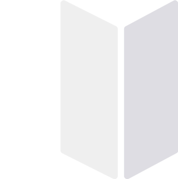

<ion-view title="Moonwalk?">
    <style>
        .content{
            /*background-color: pink;*/
            display:flex;
            align-items: center;
            justify-content: center;
            height: 100%;
            width:100%;
            position:absolute;
            top: 0;
            left:0;
            bottom: 0;
        }
        .content .stuff-and-things{
            width: 95%;
            max-width: 200px;
            display:flex;
            flex-direction: column;
            align-items: center;
            justify-content: center;
        }
        .content .stuff-and-things .logo{
            max-width:80%;
        }
    </style>
    <div class="content bg-positive" >

        {{::Home.hello}}
        <div class="stuff-and-things" style="">
            

            <button ui-sref="other.tree" class="button button-clear button-block button-outline button-dark">
                Enter!
            </button>
        </div>

    </div>
    <!--<ion-nav-buttons side="left">-->
        <!--<button menu-toggle="left" class="button button-icon icon ion-navicon"></button>-->
    <!--</ion-nav-buttons>-->
    <!--<ion-content class="has-header">-->
    <!--</ion-content>-->
</ion-view>
